Extended Set of Coefficients of a Logistic Growth Model
Source:R/extcoef_logistic.R
extcoef_logistic.RdEstimate model-specific derived parameters of the logistic growth model
Arguments
- object
model object fited by
fit_growthmodel- quantile
fraction of the capacity parameter (
K) for the quantile method- time
2-valued vector of the search interval for the independent variable (
time). Note: this needs to be set this manually if saturation is not reached within the observation time period taken from the data.- ...
reserved for future extensions
Value
vector that contains the fitted parameters and some derived characteristics (extended parameters) of the logistic function.
Details
This function returns the estimated parameters of a logistic growth model
(y0, mumax, K) and a series of estimates for the time
of approximate saturation.
The estimates are defined as follows:
turnpoint: time of turnpoint (50% saturation)sat1: time of the minimum of the 2nd derivativesat2: time of the intercept between the steepest increase (the tangent atmumax) and the carrying capacityKsat3: time when a quantile ofK(default 0.95) is reached
This function is normally not directly called by the user.
It is usually called indirectly from coef or results if
extended=TRUE.
Note
The estimates for the turnpoint and the time of approximate saturation
(sat1, sat2, sat3) may be unreliable, if saturation
is not reached within the observation time period. See example below.
A set of extended parameters exists currently only for the standard logistic
growth model (grow_logistic).
The code and naming of the parameters is preliminary and may change in
future versions.
Examples
## =========================================================================
## The 'extended parameters' are usually derived
## =========================================================================
data(antibiotic)
## fit a logistic model to a single data set
dat <- subset(antibiotic, conc==0.078 & repl=="R4")
parms <- c(y0=0.01, mumax=0.2, K=0.5)
fit <- fit_growthmodel(grow_logistic, parms, dat$time, dat$value)
coef(fit, extended=TRUE)
#> y0 mumax K turnpoint sat1 sat2
#> 0.01505667 0.40193712 0.45220395 8.38053668 11.65706694 13.35643933
#> sat3
#> 15.70615819
## fit the logistic to all data sets
myData <- subset(antibiotic, repl=="R3")
parms <- c(y0=0.01, mumax=0.2, K=0.5)
all <- all_growthmodels(value ~ time | conc,
data = myData, FUN=grow_logistic,
p = parms, ncores = 2)
# par(mfrow=c(3,4))
plot(all)
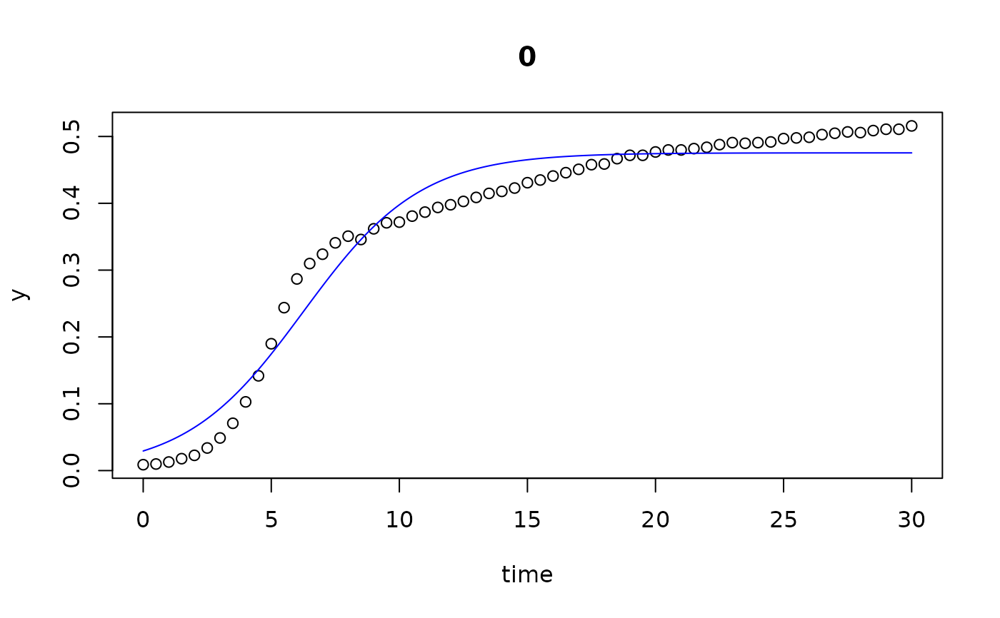
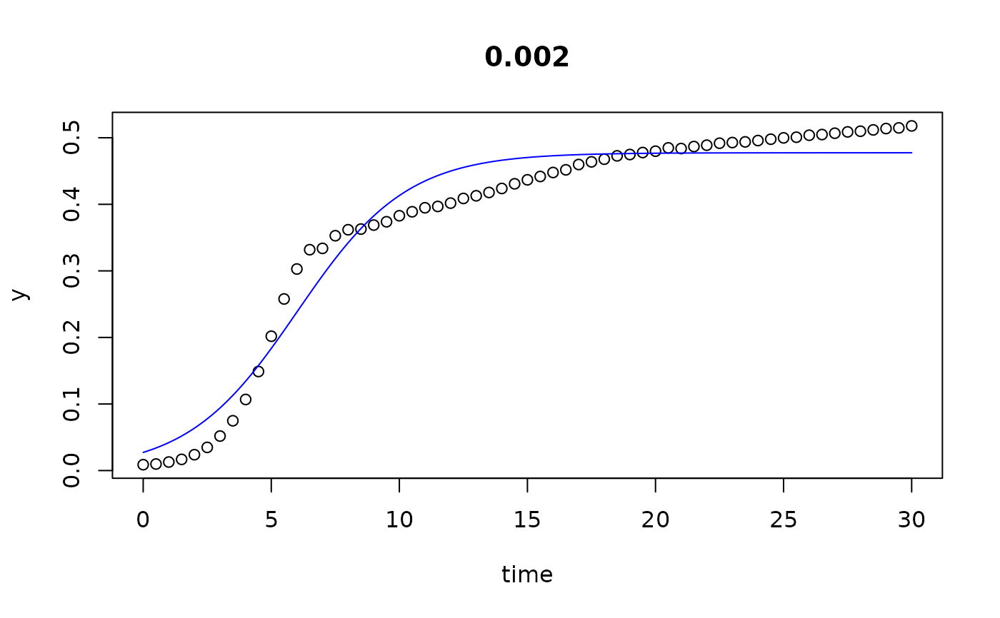
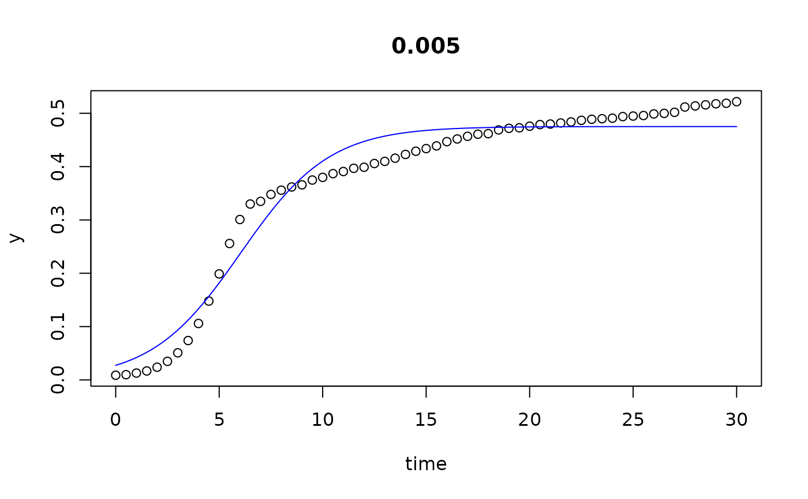
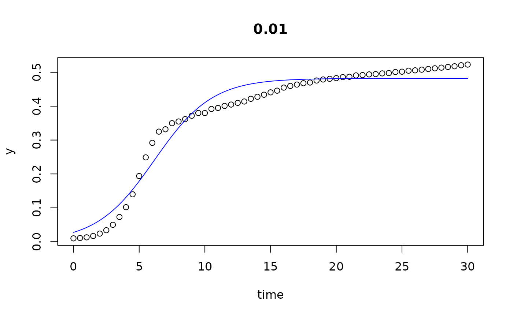
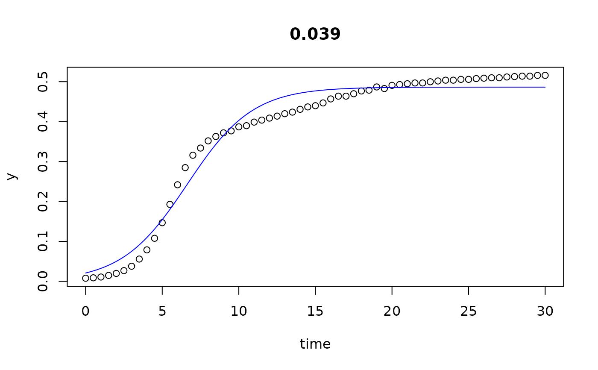
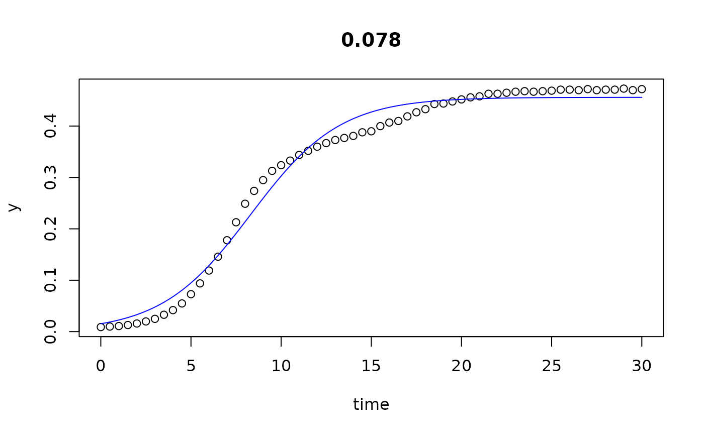
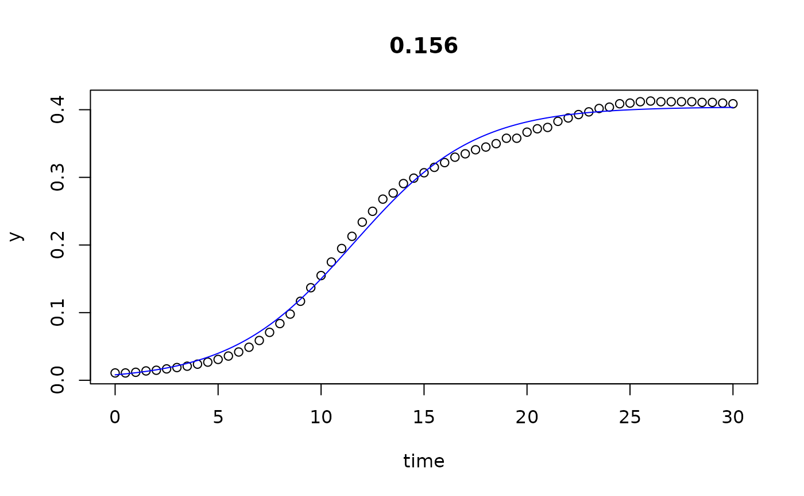
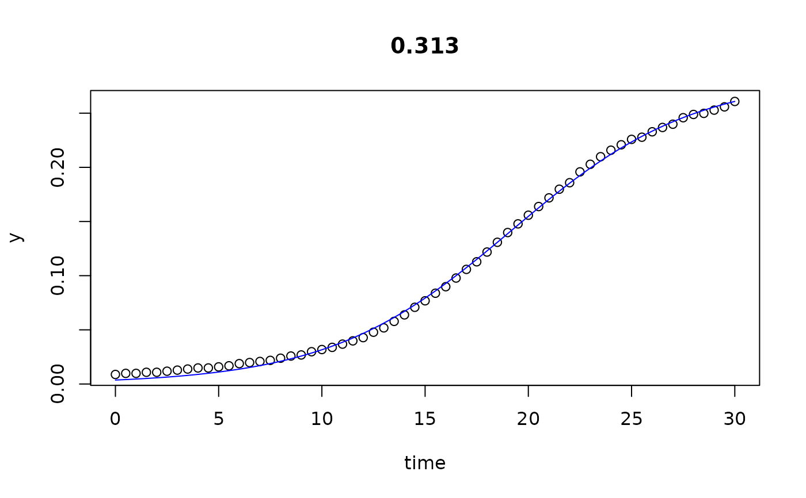
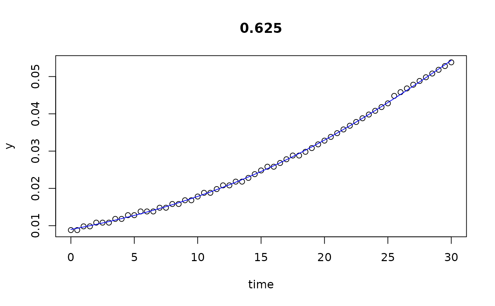
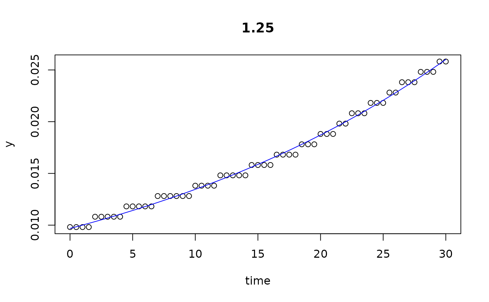
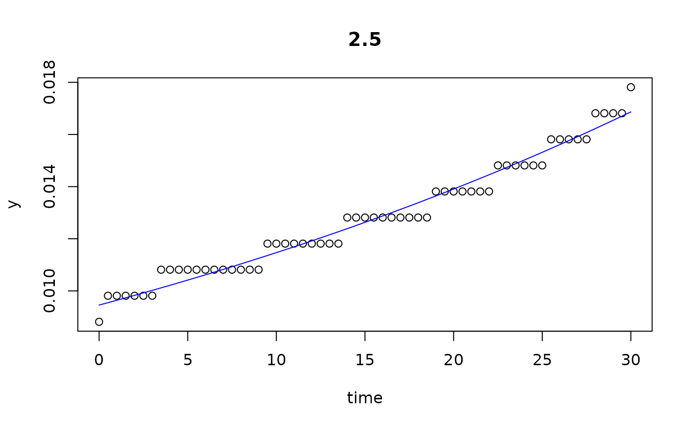
results(all, extended=TRUE)
#> conc y0 mumax K turnpoint sat1
#> 0 0.000 0.029334991 0.43545804 4.754685e-01 6.250515 9.274825e+00
#> 0.002 0.002 0.027259902 0.46653469 4.774422e-01 6.010759 8.833627e+00
#> 0.005 0.005 0.027288802 0.46419629 4.751414e-01 6.027581 8.864648e+00
#> 0.01 0.010 0.027486632 0.45515405 4.820902e-01 6.164344 9.057787e+00
#> 0.02 0.020 0.027556609 0.44897724 4.906198e-01 6.284553 9.217798e+00
#> 0.039 0.039 0.020879178 0.46785804 4.864444e-01 6.635559 9.450427e+00
#> 0.078 0.078 0.015355180 0.40381858 4.559296e-01 8.312216 1.157348e+01
#> 0.156 0.156 0.008027564 0.33717987 4.042182e-01 11.563616 1.546940e+01
#> 0.313 0.313 0.003670851 0.22588498 2.835147e-01 19.185923 2.501613e+01
#> 0.625 0.625 0.008988866 0.07656636 1.247073e-01 29.999932 6.830539e-05
#> 1.25 1.250 0.009683618 0.03294199 2.761144e+05 29.999932 6.830539e-05
#> 2.5 2.500 0.009456558 0.01928594 1.171006e+05 29.999932 6.830539e-05
#> sat2 sat3 r2
#> 0 1.084338e+01 13.01222 0.9637041
#> 0.002 1.029769e+01 12.32207 0.9615246
#> 0.005 1.033610e+01 12.37069 0.9604411
#> 0.01 1.055846e+01 12.63345 0.9647900
#> 0.02 1.073912e+01 12.84266 0.9671718
#> 0.039 1.091036e+01 12.92900 0.9745931
#> 0.078 1.326493e+01 15.60370 0.9862631
#> 0.156 1.749517e+01 20.29615 0.9956718
#> 0.313 2.803999e+01 32.22103 0.9987675
#> 0.625 5.655880e+01 71.82804 0.9994673
#> 1.25 1.610931e+08 610.47700 0.9952760
#> 2.5 1.800042e+08 999.49884 0.9737259
## we see that the the last 3 series (10...12) do not go into saturation
## within the observation time period.
## We can try to extend the search range:
results(all[10:12], extended=TRUE, time=c(0, 5000))
#> conc y0 mumax K turnpoint sat1 sat2
#> 0.625 0.625 0.008988866 0.07656636 1.247073e-01 33.37201 50.57221 59.49314
#> 1.25 1.250 0.009683618 0.03294199 2.761144e+05 521.09448 561.07255 581.80726
#> 2.5 2.500 0.009456558 0.01928594 1.171006e+05 846.82600 915.11192 950.52850
#> sat3 r2
#> 0.625 71.82804 0.9994673
#> 1.25 610.47700 0.9952760
#> 2.5 999.49884 0.9737259
## =========================================================================
## visualisation how the 'extended parameters' are derived
## =========================================================================
# Derivatives of the logistic:
# The 1st and 2nd derivatives are internal functions of the package.
# They are used here for the visualisation of the algorithm.
deriv1 <- function(time, y0, mumax, K) {
ret <- (K*mumax*y0*(K - y0)*exp(mumax * time))/
((K + y0 * (exp(mumax * time) - 1))^2)
unname(ret)
}
deriv2 <- function(time, y0, mumax, K) {
ret <- -(K * mumax^2 * y0 * (K - y0) * exp(mumax * time) *
(-K + y0 * exp(mumax * time) + y0))/
(K + y0 * (exp(mumax * time) - 1))^3
unname(ret)
}
## =========================================================================
data(bactgrowth)
## extract one growth experiment by name
dat <- multisplit(bactgrowth, c("strain", "conc", "replicate"))[["D:0:1"]]
## unconstraied fitting
p <- c(y0 = 0.01, mumax = 0.2, K = 0.1) # start parameters
fit1 <- fit_growthmodel(FUN = grow_logistic, p = p, dat$time, dat$value)
summary(fit1)
#>
#> Parameters:
#> Estimate Std. Error t value Pr(>|t|)
#> y0 0.017483 0.001581 11.06 9.98e-12 ***
#> mumax 0.200070 0.013979 14.31 2.10e-14 ***
#> K 0.099626 0.001850 53.87 < 2e-16 ***
#> ---
#> Signif. codes: 0 ‘***’ 0.001 ‘**’ 0.01 ‘*’ 0.05 ‘.’ 0.1 ‘ ’ 1
#>
#> Residual standard error: 0.004246 on 28 degrees of freedom
#>
#> Parameter correlation:
#> y0 mumax K
#> y0 1.0000 -0.8689 0.4537
#> mumax -0.8689 1.0000 -0.7048
#> K 0.4537 -0.7048 1.0000
p <- coef(fit1, extended=TRUE)
## copy parameters to separate variables to improve readability ------------
y0 <- p["y0"]
mumax <- p["mumax"]
K <- p["K"]
turnpoint <- p["turnpoint"]
sat1 <- p["sat1"] # 2nd derivative
sat2 <- p["sat2"] # intercept between steepest increase and K
sat3 <- p["sat3"] # a given quantile of K, default 95\%
## show saturation values in growth curve and 1st and 2nd derivatives ------
opar <- par(no.readonly=TRUE)
par(mfrow=c(3, 1), mar=c(4,4,0.2,0))
plot(fit1)
## 95% saturation
abline(h=0.95*K, col="magenta", lty="dashed")
## Intercept between steepest increase and 100% saturation
b <- deriv1(turnpoint, y0, mumax, K)
a <- K/2 - b*turnpoint
abline(a=a, b=b, col="orange", lty="dashed")
abline(h=K, col="orange", lty="dashed")
points(sat2, K, pch=16, col="orange")
points(turnpoint, K/2, pch=16, col="blue")
## sat2 is the minimum of the 2nd derivative
abline(v=c(turnpoint, sat1, sat2, sat3),
col=c("blue", "grey", "orange", "magenta"), lty="dashed")
## plot the derivatives
with(dat, plot(time, deriv1(time, y0, mumax, K), type="l", ylab="y'"))
abline(v=c(turnpoint, sat1), col=c("blue", "grey"), lty="dashed")
with(dat, plot(time, deriv2(time, y0, mumax, K), type="l", ylab="y''"))
abline(v=sat1, col="grey", lty="dashed")
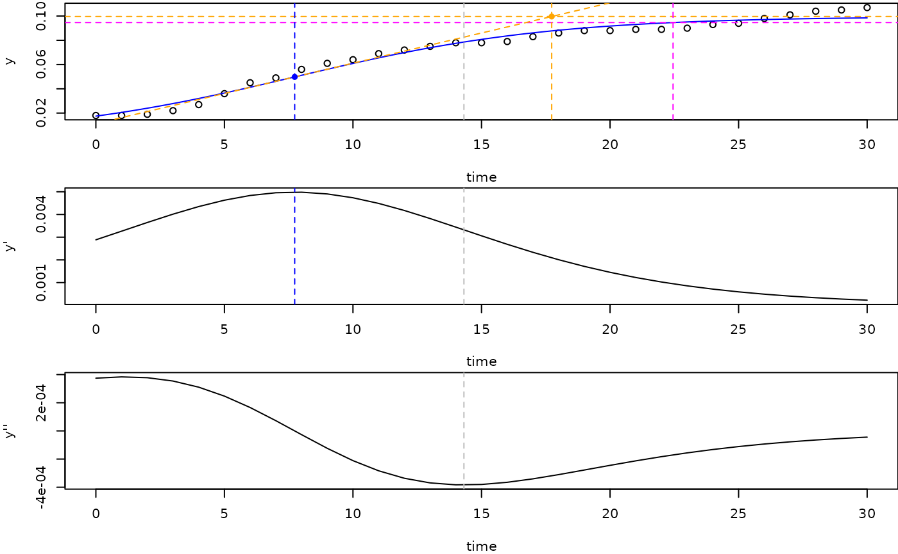
par(opar)